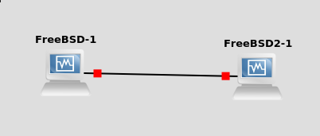

Sujet 1
HomeContrôle et gestion d’erreurs de la couche réseau avec ICMP
Cette partie est à effectuer depuis votre ordinateur. Vous aurez besoin de wireshark.
Lancez depuis la ligne de commande traceroute vers l’un des serveurs HTTP de votre choix, par exemple www.ietf.org.
Sur windows l'utilitaire s'appel tracert.
Note : traceroute (et tracert) vous affiche une ligne par routeur intermédiare entre votre ordinateur et le serveur cible.
Pour chaque étape, vous avez 3 tentatives qui vont donner 3 temps.
Lorsque tracert ou traceroute vous affiche des * c'est que les routeurs en questions ne vous ont pas répondu.
- Question 1 Quel serveur avez-vous choisi ? Quelle est son adresse IP ?
- Question 2 Utilisez wireshark pour observer les paquets échangés lors du traceroute. Quels protocoles sont utilisés ? Comment fonctionne traceroute ? Observer notamment les champs de la couche réseau.
- Question 3 Combien de routeurs le dernier paquet a-t-il traversé au total ? Quel est le temps d’aller/retour (RTT) entre votre machine et la machine distante ? Donnez les 3 valeurs observées. Y a-t-il eu des paquets perdus ?
- Question 4 (bonus) Tester le RTT avec la commande ping sur le même serveur. Utilisez l’option
-c 1(pour windows :/n 1) pour faire un unique test.
Couche Transport
Préparation de votre environnement
Nous allons créer une topologie réseau avec GNS.
Pour ce premier TP vous n'aurez besoin que 2 de machines avec un seul lien entre elles.
- Commencez par créer 2 machines virtuelles virtualbox sans les démarrer.
- Dans GNS, importez vos machines virtuelles comme template (
Edit > Preferences > VirtualBox VMs puis New) - Dans la barre de gauche ouvrez
End devicesvous devriez retrouver vos machines. Glissez-les dans la zone principale. - Faites un clique droit sur chaque machine, allez dans
ConfigurepuisNetworket cochez la caseAllow GNS3 tu use any configured VirtualBox adapter. - Ajoutez un lien entre les 2 machines. Vous pouvez choisir l'interface ethernet que vous souhaitez.
Voici la toppologie que vous devrier avoir :

Pour terminer on va rapidement configurer le réseau de chacune des machines.
Démarrez-les via le menu contextuel, vous devriez avoir virtualbox qui se lance.
Les machines n'ont pas d'autoconfiguration, nous allons les configurer. Nous entreront plus en détails dans le second TP.
Sur chaque la première machine lancez :
ifconfig em0 inet 10.0.0.1 netmask 255.255.255.0
Sur la seconde machine :
ifconfig em0 inet 10.0.0.2 netmask 255.255.255.0
Pour vérifier que tout fonctionne, depuis la premier machine lancez :
ping 10.0.0.2
Vous devriez obtenir l'affichage suivant qui se répète :
64 bytes from 10.0.0.2: icmp_seq=1 ttl=64 time=0.043 ms
Protocole UDP
- Question 5 Quels sont les services fournis par UDP ?
Lancez socklab en mode udp sur les deux stations connectées :
socklab udp
Sur l’une des stations démarrez une capture wireshark. Sur chaque station créez une socket udp avec la commande socket.
- Question 6 À quoi sert le numéro de port qui vous est renvoyé ? Comment la machine destinataire le connaı̂t-elle ?
Sur l’une des machines envoyez des données vers l’autre en précisant son adresse IP et son numéro de port
sendto <id de socket> <ip de la machine destinataire> <port destinataire>
Sur la 2e machine demandez à lire les données :
recvfrom <id de socket> <nb octets>
Pour utiliser wireshark, faites un clique droit sur le lien entre les 2 machines et choisissez de lancer la capture.
- Question 7 Quels paquets transitent sur le réseau lors de l’envoi d’un message par UDP ?
- Question 8 Que se passe-t-il si l’on demande à lire moins d’octets que ceux envoyés ?
- Question 9 Si l’on envoie plusieurs messages avant de lire de l’autre côté ?
- Question 10 Si vous envoyez le message vers un port inexistant ?
- Question 11 Si vous envoyez plus de données que la taille du MTU ? (pour envoyer 1000 octets tapez
#1000à la place du message à envoyer). La taille maximale d’un paquet est donnée par son MTU (ifconfig). Que signifie MTU ? - Question 12 (bonus) Consultez les options par défaut de votre socket. Changez la taille du tampon (buffer) de réception. Expérimentez l'envoi de messages plus grands.
Protocole TCP
Lancez socklab en mode tcp sur les deux stations connectées (voir l'aide socklab) :
socklab tcp
Sur l’une des stations démarrez une capture wireshark. Établissez une connexion TCP.
- Question 13 Analysez les paquets échangés. Quel est le rôle du flag SYN ? Quelles sont les options dans l’en-tete du premier message ? Établissez deux connexions vers un même port destinataire ?
- Question 14 Qu’est-ce qui identifie une connexion TCP ?
Fermez la connexion avec close.
- Question 15 Quels sont les messages échangés ? Faites un diagramme temporel (vous pouvez le créer via wireshark) indiquant les flags positionnés, les numéros de séquence et d’acquittement si besoin. Établissez une connexion TCP, démarrez une capture puis déconnectez le câble réseau d’une des machines. Envoyez un message depuis la machine où vous avez lancé wireshark vers l’autre machine.
- Question 16 Que se passe-t-il ? Et lorsque vous rebranchez le câble ? Que peut-on en conclure ? Quelle est la durée entre deux retransmissions ? (bonus: Quelle est la durée entre la 1 re émission et la dernière retransmission ?)
- Question 17 (bonus) Consultez les options par défaut de votre socket (avec la commande
optionssuivi du numero de socket). Changez la taille du tampon de réception. Expérimentez d'envoyer des messages plus grands.